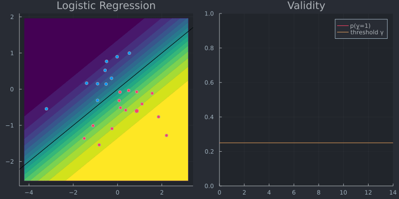
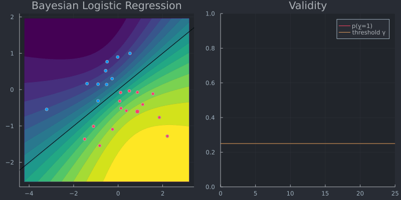

Generating recourse
using Flux
using Random
using Plots
using PlotThemes
theme(:juno)
using Logging
disable_logging(Logging.Info)LogLevel(1)To understand the core functionality of AlgorithmicRecourse.jl we will look at two example use cases of the generate_recourse function. This function takes a structure of type Generator as its main argument. Users can utilize one of the default generators: GenericGenerator <: Generator, GreedyGenerator <: Generator. Alternatively, users can also create their own custom generator.
Default generators
GenericGenerator
Let $t\in\{0,1\}$ denote the target label, $M$ the model (classifier) and $\underline{x}\in\mathbb{R}^D$ the vector of counterfactual features. In order to generate recourse the GenericGenerator optimizes the following objective function through steepest descent
\[\underline{x} = \arg \min_{\underline{x}} \ell(M(\underline{x}),t) + \lambda h(\underline{x})\]
where $\ell$ denotes some loss function targeting the deviation between the target label and the predicted label and $h(\cdot)$ as a complexity penality generally addressing the realism or cost of the proposed counterfactual.
Let's generate some toy data:
# Some random data:
Random.seed!(1234);
N = 25
w = reshape([1.0,-2.0],2,1) # true coefficients
b = 0
X = reshape(randn(2*N),N,2).*1 # random features
y = Int.(round.(Flux.σ.(X*w .+ b))); # label based on sigmoid
# Choose sample and plot:
x̅ = reshape(X[5,:],1,2);For this toy data we will now implement algorithmic recourse as follows:
- Use the coefficients
wandbto define our model usingAlgorithmicRecourse.Models.LogisticModel(w, b). - Define our
GenericGenerator. - Generate recourse.
using AlgorithmicRecourse
𝑴 = AlgorithmicRecourse.Models.LogisticModel(w, [b]);
y̅ = round.(AlgorithmicRecourse.Models.probs(𝑴, x̅))[1]
target = ifelse(y̅==1.0,0.0,1.0)
γ = ifelse(target==1.0,0.75,0.25)
generator = GenericGenerator(0.1,0.1,1e-5,:logitbinarycrossentropy,nothing)
recourse = generate_recourse(generator, x̅, 𝑴, target, γ); # generate recourseNow let's plot the resulting counterfactual path in the 2-D feature space (left) and the predicted probability (right):
x1 = (minimum(X[:,1])-1):0.1:(maximum(X[:,1])+1)
x2 = (minimum(X[:,2])-1):0.1:(maximum(X[:,2])+1)
p1 = Plots.contourf(
x1,x2,(x, y) -> AlgorithmicRecourse.Models.probs(recourse.𝑴, reshape([x,y],(1,2)))[1],
color = :viridis,
linewidth = 0,
legend=false
)
scatter!(p1,X[:,1],X[:,2],legend=false,color=y,title="Logistic Regression") # features
Plots.abline!(p1, -w[1]/w[2],0,color="black") # decision boundary
T = size(recourse.path)[1]
probs = AlgorithmicRecourse.Models.probs(recourse.𝑴, recourse.path)
anim = @animate for t in 1:T
scatter!(p1, [recourse.path[t,1]], [recourse.path[t,2]], ms=5, color=Int(y̅))
p2 = plot(1:t, probs[1:t], xlim=(0,T), ylim=(0, 1), label="p(y̲=1)", title="Validity")
Plots.abline!(p2,0,γ,label="threshold γ") # decision boundary
plot(p1,p2,size=(800,400))
end
gif(anim, "www/generic_recourse.gif", fps=5);
GreedyGenerator
Next we will repeat the exercise above, but instead use the GreedyGenerator in the context of a Bayesian classifier. This generator is greedy in the sense that it simply chooses the most salient feature $\underline{x}[d]$ where $d=\arg\max_{d \in [1,D]} \nabla_{\underline{x}} \ell(M(\underline{x}),t)$ and perturbs it by a fixed amount $\delta$. In other words, optimization is penalty-free. This is possible in the Bayesian context, because maximizing the predictive probability $\gamma$ corresponds to minimizing the predictive uncertainty: by construction the generated counterfactual will therefore be realistic (low epistemic uncertainty) and unambiguous (low aleotoric uncertainty).
using LinearAlgebra
Σ = Symmetric(reshape(randn(9),3,3).*0.01 + UniformScaling(1)) # MAP covariance matrix
μ = vcat(b, w)
𝑴 = AlgorithmicRecourse.Models.BayesianLogisticModel(μ, Σ);
generator = GreedyGenerator(0.1,12,:logitbinarycrossentropy,nothing)
recourse = generate_recourse(generator, x̅, 𝑴, target, γ); # generate recourseOnce again we plot the resulting counterfactual path (left) and changes in the predicted probability (right). For the Bayesian classifier predicted probabilities splash out: uncertainty increases in regions with few samples. Note how the greedy approach selects the same most salient feature over and over again until its exhausted (i.e. it has been chosen GreedyGenerator.n times).
p1 = Plots.contourf(
x1,x2,(x, y) -> AlgorithmicRecourse.Models.probs(recourse.𝑴, reshape([x,y],(1,2)))[1],
color = :viridis,
linewidth = 0,
legend=false
)
scatter!(p1,X[:,1],X[:,2],legend=false,color=y,title="Bayesian Logistic Regression") # features
Plots.abline!(p1, -w[1]/w[2],0,color="black") # decision boundary
T = size(recourse.path)[1]
probs = AlgorithmicRecourse.Models.probs(recourse.𝑴, recourse.path)
anim = @animate for t in 1:T
scatter!(p1, [recourse.path[t,1]], [recourse.path[t,2]], ms=5, color=Int(y̅))
p2 = plot(1:t, probs[1:t], xlim=(0,T), ylim=(0, 1), label="p(y̲=1)", title="Validity")
Plots.abline!(p2,0,γ,label="threshold γ") # decision boundary
plot(p1,p2,size=(800,400))
end
gif(anim, "www/greedy_recourse.gif", fps=5);